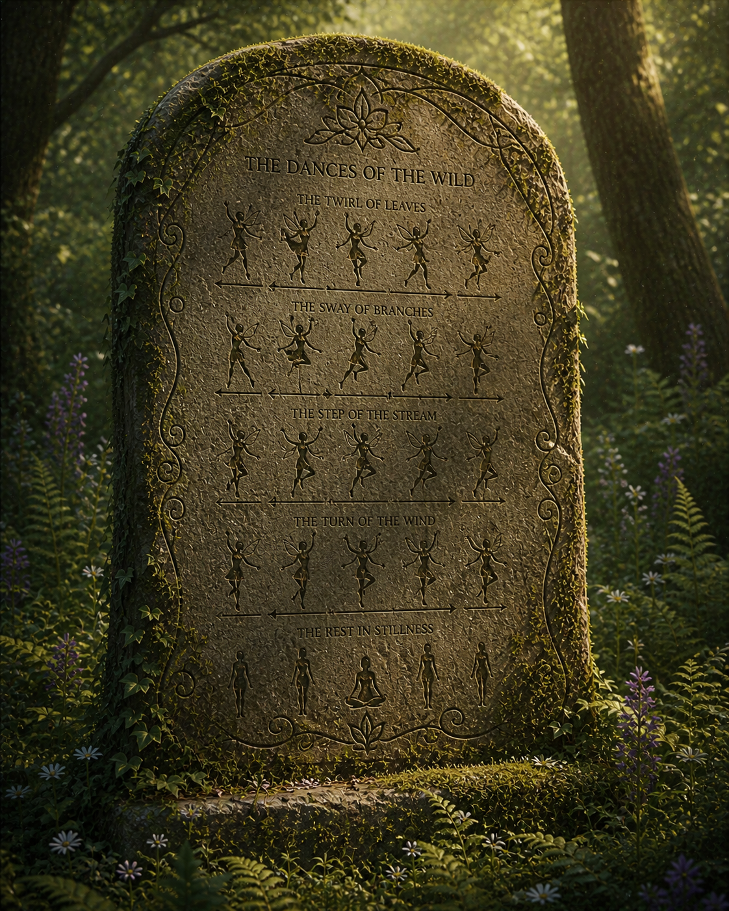
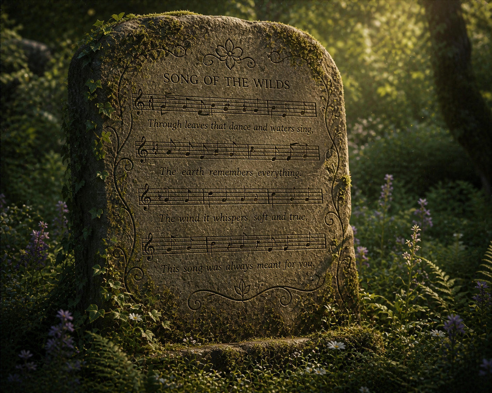

But only temporarily! When you successfully walk past the eagle, you travel further down the path and see two stone tablets at the end. Carved on them are magical inscriptions: one is a song, and the other has movements. By the context, you believe that this is the final step to finding the Hidden Flower. You can hear the eagle in the distance (it seems like it woke up), and your friends' opinions are split! Quick, which magical spell do you do!?
Redirecting in 15 seconds...

